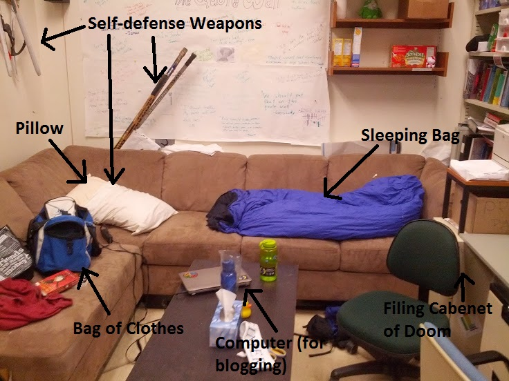

The Mission
Hi, my name is Jacob Ortt and I am the PR Rep for the Computer Engineering Club. During this year's geer week I have found myself in a bit of a bind. For anyone who does not know the Rules of Geer week, PR reps are treated like objects. I must be in the possession of another member of my club or else I can be stolen by another club. All of my individuality is stripped away as I am escorted from place to place like a dog on a leash. This would all be fine and dandy if it wasn't for one major problem: I live with two Mechanical Engineers. Any time that I go home I can be kidnapped by their club and held for ransom. As you can imagine this idea does not appeal to me a whole lot, so I have decided to avoid the situation completely by just not going home. There is one safe place for me during geer week and that is the computer engineering club room in ETLC. I will be living ETLC for the entire span of geer week 2014 and I have started this blog to document my Chronicles.
My set-up
My living conditions will be cramped but fairly comfortable. I have a sleeping bag on the couch and I have bought a decent amount of food to hold me over for the week. Our club room is one of the biggest ones in the building but it is still very stuffy. There is no well-functioning ventilation so as soon as there is more than one person in the room it heats up to unbearable temperatures. This is my greatest fear going into this because I do not deal well with heat. In hopes to minimize my overheating I have shaved off all of my chest and back hair, however I fear it will not be enough. I have no idea what my first night will hold but I will put up a post in the morning describing it. I am hoping to do two blog posts a day during this week to give an in-depth understanding of my adventure.
STATS
Physical Strength: 10
Mental Strength: 10
Energy: 8
Optimism: 7
Hair Poof Level: Ryan Gosling
Disclaimer
This blog is meant to be a fictional account. ETLC is a building designed for "teaching and learning", not living. Any resemblance that this story holds with true accounts is purely coincidental.